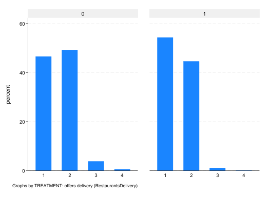
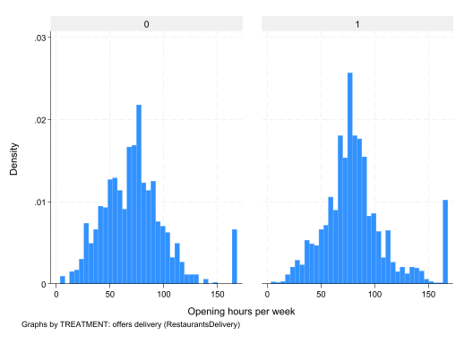
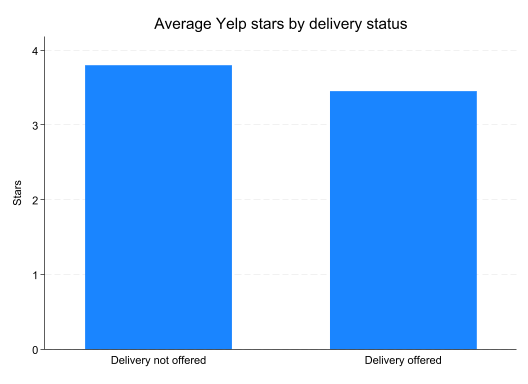
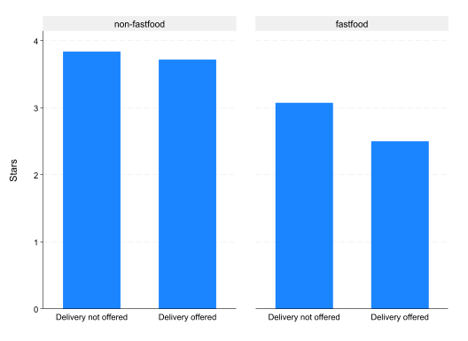
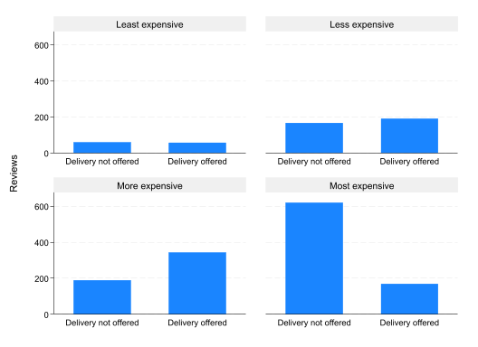

* Title: Econometrics Lab 4: Observational Studies in Stata
* Author: [INSERT NAME]
* Date: [INSERT DATE]
* ============================================================================ *
* Clear all objects in memory
clear all
* Set directory
cd "[INSERT FILE PATH]"
* Start log
cap log close
log using lab-4-log.txt, replace text
* ============================================================================ *
* Open data
use "yelp_restaurants.dta"
* ============================================================================ *
* Sample selection
* ============================================================================ *
* Assignment
* ============================================================================ *
* Correlation
* ============================================================================ *
* Model
* ============================================================================ *
* Close log
log closeEconometrics Lab 4
Observational Studies in Stata
During this lab you will analyse data on restaurant reviews from Yelp, courtesy of the Yelp Open Dataset. You will be provided with a Stata .dta version of the data containing information on 52,268 restaurants. The dataset is a snapshot of restaurants on Yelp taken during early 2022 and covers a select number of US states.
The goal of the lab is to examine whether offering delivery improves a restaurant’s reviews (using the dummy variable delivery). There will be two main outcome variables: stars (average number of stars across reviews) and review_count (number of reviews). The timing of the Yelp snapshot is quite important: in early 2022 many restaurants had closed down (33.06% in the data) and those who were still open were almost universally offering takeout (95.75% in the data, conditional on being open). However, not all restaurants were offering delivery: 72.95% conditional on being open.
Part 1: Analysis: In the first part of the lab you will conduct your own analysis of the data following some guiding questions. You may find it helpful to have access to your .do file from Lab 3, as many of the steps will be similar.
Assignment: comparing the characteristics of restaurants that offer delivery with those that do not
Correlation: examine the unconditional relationship between outcome and treatment variables, as well as potential confounding factors
Model: establishing a model that estimates the average impact of offering delivery under specific assumptions.
Part 2: Mini Report: In the second part of the lab you will create a mini report of your results using a prepared template. This report will be rendered in Stata as a .html file containing both your code and results. This is an important step as you will need to create a report just like this for your project.
To complete part 2 you will need the following files available on Moodle: Lab 4 Resources (Stata)
- “ec3301-lab-4.txt”
- “execute-markdown.do”
- “header.txt”
- “stmarkdown.css”
By completing parts 1 and 2, you will have developed the technical skills you need to complete the project.
Setup
On Moodle, under “Week 9”, you find the “Lab 4 Data (Stata)” folder.
Create a folder on OneDrive (or your H drive) for “Lab 4”
Download ALL the files, including the “yelp_restaruants.dta”, and store them in this folder. If you download a zipped (compressed) folder, ensure that you unzip the folder and move all contents to your working directory.
Open Stata and create a new .do file. Save it as “Lab 4/lab-4.do”
Add the following to your .do file; editing the file path to match your folder structure.
Part 1: Analysis
Sample selection
Remove all closed restaurants from the data. Hint: you can use either
keepordrop.What type of variable is
state? How many states are represented in the dataset? Hint: usedescribeandcodebook.Pick one of states for which there is a reasonable sample. Remove all other observations from the data.
Assignment
Each restaurant decides whether it makes sense to offer delivery based on a range of criteria. For this reason, we cannot study this question as if delivery is the outcome of a randomized experiment. We must therefore start by establishing the characteristics of firms that determine selection into delivery.
What share of the restaurants in your sample offer delivery?
Of the categories of restaurants shown in the dataset (
cat_fastfood-cat_bar) which category has the highest propensity to offer delivery? Here is an example of the code you could use:
sum delivery if cat_fastfood==1- Create a balance table that similar to one in Lab 3 that shows the food-category characteristics of restaurants that do and don’t offer delivery. Here is an example for Florida.
dtable cat_fastfood cat_pizza cat_burgers cat_sandwich cat_chinese cat_mexican cat_italian cat_japanese cat_breakfast cat_cafe cat_bar n_categories, by(delivery, tests)note: using test regress across levels of delivery for cat_fastfood,
cat_pizza, cat_burgers, cat_sandwich, cat_chinese, cat_mexican,
cat_italian, cat_japanese, cat_breakfast, cat_cafe, cat_bar, and
n_categories.
----------------------------------------------------------------------------------
TREATMENT: offers delivery (RestaurantsDelivery)
0 1 Total Test
----------------------------------------------------------------------------------
N 1,345 (26.5%) 3,739 (73.5%) 5,084 (100.0%)
Category: fast food 0.055 (0.228) 0.220 (0.414) 0.176 (0.381) <0.001
Category: pizza 0.056 (0.230) 0.151 (0.358) 0.126 (0.332) <0.001
Category: burgers 0.070 (0.255) 0.147 (0.354) 0.127 (0.333) <0.001
Category: sandwiches 0.135 (0.342) 0.216 (0.411) 0.195 (0.396) <0.001
Category: Chinese 0.064 (0.245) 0.060 (0.238) 0.061 (0.240) 0.621
Category: Mexican 0.082 (0.274) 0.081 (0.273) 0.081 (0.273) 0.932
Category: Italian 0.046 (0.210) 0.094 (0.292) 0.082 (0.274) <0.001
Category: Japanese/sushi 0.053 (0.224) 0.051 (0.221) 0.052 (0.222) 0.838
Category: breakfast & brunch 0.152 (0.359) 0.138 (0.345) 0.141 (0.348) 0.209
Category: cafe/coffee 0.111 (0.314) 0.128 (0.335) 0.124 (0.329) 0.093
Category: bar/pub 0.292 (0.455) 0.205 (0.404) 0.228 (0.420) <0.001
Number of Yelp categories listed 4.901 (2.486) 4.987 (2.307) 4.964 (2.355) 0.254
----------------------------------------------------------------------------------Does it appear as if the choice to offer delivery is balanced by food category? If not, where do you see the biggest differences?
Replicate the following graph which shows the distribution of
price_rangebydelivery. Hint: you can usegraph barfor this.

- Replicate the following histogram of
weekly_hours(hours open per week) bydelivery.

Correlation
Next, you need to establish the unconditional correlation between delivery and the outcomes stars and review_count.
Compute the average
starsbydelivery. Recall from Lab 1, that we usedtab var1, sum(var2). You can also use othertableandtabstatcommands.Plot the average stars by delivery. You will need to edit the value labels of the
deliveryto replicate this figure (shown here for Florida).

Execute a
ttest(with unequal variance) to test whether there is a significant difference between the average stars.Replicate Q1-Q3 for
review_count.The figure below shows the difference in mean
starsby delivery status separately bycat_fastfood(using the graph optionby()). Create a similar figure in for your sample. Do both fastfood and non-fastfood restaurants show a difference instarsby delivery status?
lab def CAT_FF 0 "non-fastfood" 1 "fastfood"
lab val cat_fastfood CAT_FF
graph bar (mean) stars, over(delivery) by(cat_fastfood, note("")) ytitle("Stars")
- The figure below shows the difference in mean
review_countby delivery status separately byprice_range(using the graph optionby()). Create a similar figure in for your sample. Are the differences consistent across price ranges?

Model
You now need estimate a model that controls for the characteristics of restaruants that are unbalanced across delivery status.
Which of the variables in the dataset could be “good controls”? Justify your choice.
Create a table of regression results for the outcome
starsshowing both the unconditional model alongside the conditional model(s). Estimate heteroskedastic-robust SEs. Adjust the reported stars with the optionshowstars showstarsnote stars(.1 "*" .05 "**" .01 "***")(see Lab 3).What is the direction of the selection (omitted variable) ‘bias’ in the unconditional model?
Does the number of observations vary across each model? Why?
If the observations differ, you can use the following approach. Estimate the model with the largest set of controls, then create a variable that identifies this sample. Then estimate each model again (and commpute the table), selecting on this sample.
.
qui reg stars delivery cat_cafe cat_bar cat_breakfast cat_fastfood n_categories weekly_hours chain i.price_range alcohol i.noise, vce(robust)
gen sample = e(sample)
reg stars delivery if sample==1, vce(robust)Create a similar table of regression results for the outcome
review_count.If you use the log of
review_count, does your conclusion differ?Perform a RESET test to check for missing nonlinear functions of your controls in the model. See Lecture-7 for the code on how to do this. What do you conclude from the test? If the null is rejected, try include some interactions of the control variables. You could also include interactions with the treatment variable
delivery(see Lecture-7 on unrestricted regression asdjustment for this).
Part 2: Mini Report
Part 2 of the lab requires you to combine code and answers from Part 1 into a mini report. This will be done using a markdown file. Stata’s version of a markdown file is called a dynamic document.1
You have been provided with a template for the file: “ec3301-lab-4.txt”. You can open it in Stata’s .do-file window:
In the .do file window (NOT the main Stata window), go to “File > Open > Open”.
The window should open the folder where your “lab-4.do” is stored.
In the bottom right, change the displayed file types to “All Files (.)”.
Select “ec3301-lab-4.txt” and select “Open”.
There are two other files that will be used by Stata when executing the markdown file:
“stmarkdown.css”: determines the format of the published file
“header.txt”: links the “stmarkdown.css” file and also links to latest version of MathJax to ensure correct formating of Math notation.
Dynamic documents
A markdown file works in the opposite way to a programming script. In the .do file, everything is assumed to be code unless commented out. In a markdown file, everything is assumed to be plain text unless it is placed inside a code-block.
Stata’s code-block notation is a little convoluted, but it works. When you want to add code to the file, you do so by placing it inside a cpde-block:
~~~~
<<dd_do>>
sum stars
<</dd_do>>
~~~~When you render the file, the code-blocks are executed in the order they appear. In addition, the code will be rendered together with the plain text into a single output file. As a result, the output file will display the code and resulting output alongside the text you include.
Execution
To execute the file, you need to open the .do file “execute-markdown.do” in your .do file window. The file looks as follows:
cd "[YOUR FILE PATH]" // edit with your working directory
* Step 1: Render as html (fastest and neatest) to check code execution
dyndoc ec3301-lab-4.txt, replace embedimage
* Step 2: Once you are happy, render to docx to check spelling/language
dyndoc ec3301-lab-4.txt, replace embedimage docx
* Step 3: Make you final edits
* Step 4: Re-render and then convert docx to pdf
dyndoc ec3301-lab-4.txt, replace embedimage
dyndoc ec3301-lab-4.txt, replace embedimage docx
docx2pdf ec3301-lab-4.docx, saving(ec3301-lab-4.pdf) replaceYou need to edit the file-path to match the path to your “Lab 4” folder. This must be where the “yelp_restaurants.dta” and “ec3301-lab-4.txt” files are.
Having set the file path, run the line under Step 1. This is the fastest and will execute the file creating a .html document.
Next, you can execute the file as a MS Word document. This will give you an opportunity to check the text for spelling/language mistakes. Unfortunately, any LaTeX notation math will not display very well in Word format.
Make any edits you need before rendering the file as a .html again and then as .pdf in the final two steps.
Task
Your task is to edit the template you have been provided to include a selection of code from Part 1. The goal is to create a short mini-report on the analysis. Include a short discussion at the end summarizing your findings on the impact that delivery services has on resturant ratings.
The file will need to re-open the dataset and include any sample selection decisions you made.
If you have time, consider carefully about the formatting of the graphs: titles, labels, colours, etc. Try to produce graphs that as clearly as possible communicate the relevant information.
Code-blocks
There are other examples of code-blocks in the template.
- Code-blocks that execute quietly. These hide both the output and code from the final document.
~~~~
<<dd_do:quietly>>
<</dd_do>>
~~~~- Code-blocks that hide output, but show code.
~~~~
<<dd_do:nooutput>>
<</dd_do>>
~~~~- Code-blocks that hide code, but show output.
~~~~
<<dd_do:nocommands>>
<</dd_do>>
~~~~Code-blocks that automatically embed images. This is a very useful feature.
First you use a normal code-block to create the image, then you embed the image in the document. You can use other image file formats (.png, .jpg), but .svg works well with .html output.
~~~~
<<dd_do>>
graph bar, over(price_range) by(delivery)
<</dd_do>>
~~~~
<<dd_graph: saving(g1) replace alt("Distribution of price category, by delivery status") height(400)>>You need to give the file a name (here nameed g1). At this stage, you can also add the optional step of adding a caption or adjusting the size of the image. First try it without, to see if you are happy with the default. You may also prefer to use the figure title in place of a caption.
If you create a second graph, you need to give it another file name (e.g. g2). Otherwise, you will end up replacing the previous image.
TipNumbers in the text
You can also place Stata results directly inside a sentence using inline code: <<dd_display: >>. For example,
~~~
<<dd_do: quietly>>
summarize delivery
<</dd_do>>
~~~
<<dd_display: %4.2f r(mean)*100>>% of restaurants offer delivery.will display the share of restaurants that offer delivery (fixed to 2 decimal places), computed when you knit. If the sample changes, the number in the text updates automatically. This is a sophisticated way of ensuring that your text matches is the output, but is can be quite cumbersome to use.
Use help format to see what %4.2f means and the other ways to format a value.
Markdown notation
The text in the markdown file can be formatted using standard markdown notation: a lightweight markup language. The Markdown notation guide and the Markdown Wiki Page provide a comprehensive list of features. Here are a few useful ones:
- Bold: to embolden text, wrap it in two *’s either side.
**Bold text**- Italics: to italicize text, wrap it in a single * either side.
*Italics text*- Make a number list as follows. Be sure to include a blank space before and after the first and last item.
1. Item 1
1.1. Sub-item 1
2. Item 2- Make a bullet point list by as follows. Be sure to include a blank space before and after the first and last item.
- Item 1
- Sub-item 1
- Item 2- Add inline Math using LaTeX notation, by wrapping it in a $ either side.
The OLS estimator for $\beta_j$- Add a display equation, by wrapping it in double $’s.
$$
y_i = x_i\beta + \epsilon_i
$$- Include headers, subheaders, and sub-subheaders
# Header
## Subheader
### Sub-subheader- Include a URL link
[Link](https://neil-lloyd.github.io/st-andrews-ec3301/)